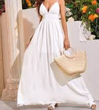
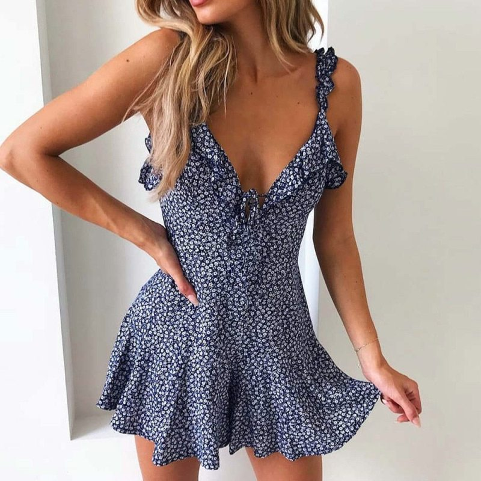
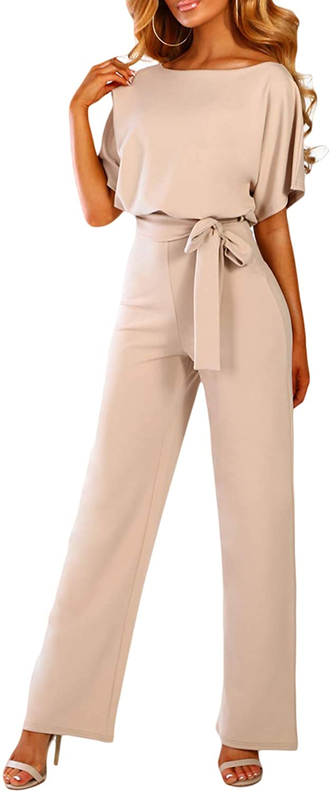
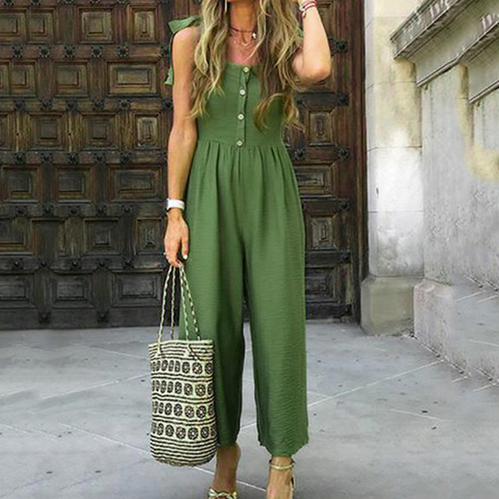
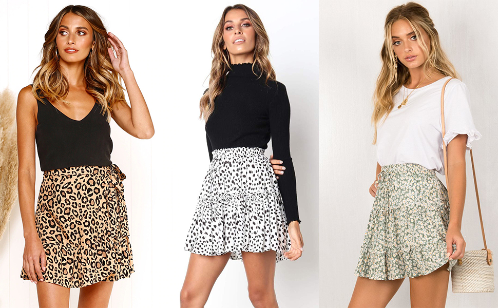
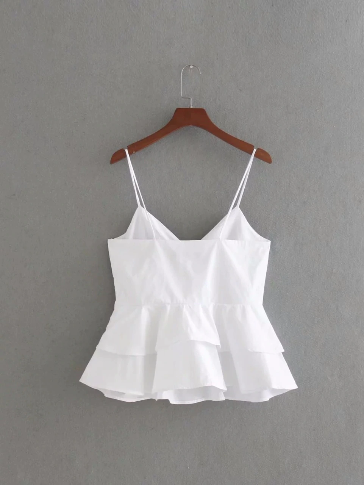
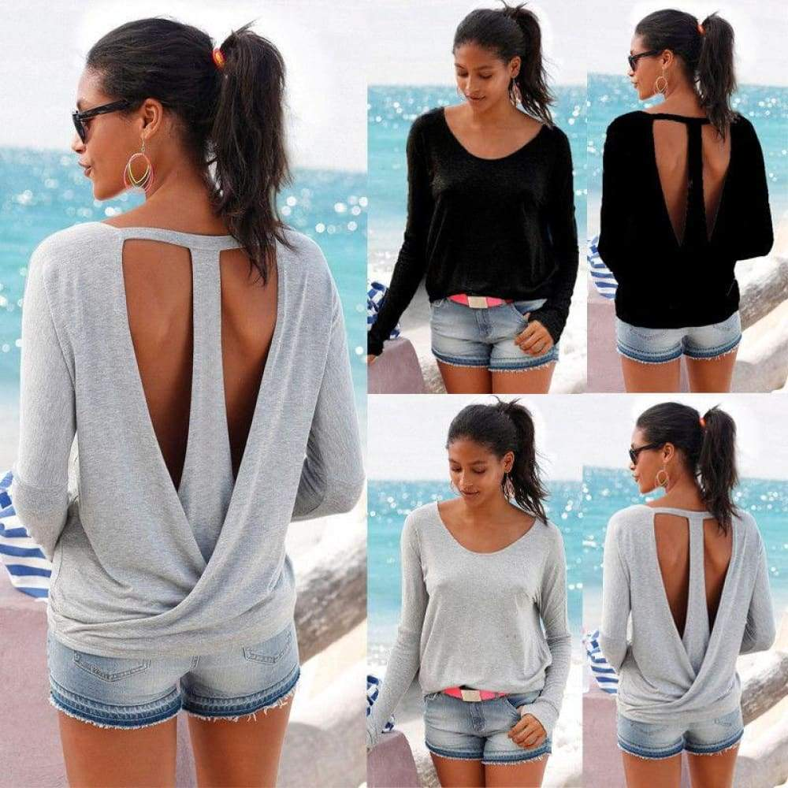
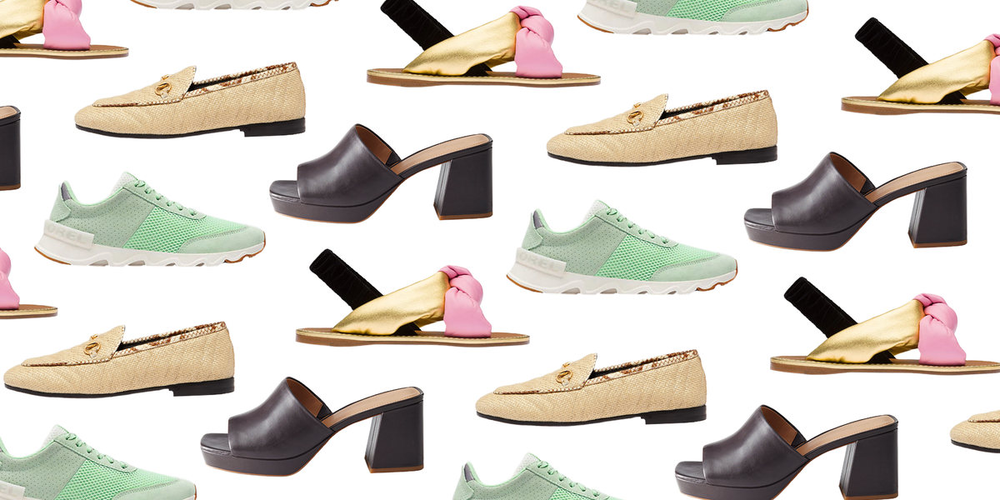

Home Summer Winter Fall Spring About Me!
Welcome to Summer!
Good Choice! I see you've picked Summer. Summer is great, but depending where you are, the weather may have a mind of its own! This is where we come in! Prepare to feast your eyes on some of the trendiest pieces of the year. Wait there's more: these pieces will keep you cool under the hot Summer sun. However, remember: ALWAYS wear sunscreen. Simply scroll down to your gender and type of style to rock this SUMMER!
Women
Dresses
Ah, dresses. They can literally be anything you want them to be: long, short, casual, fancy. In the Summer, you want to look for something bright, but not to vibrant that it looks neon. A lot of pastels and lights look great here. As for the type, dresses can be literally look like anything you want it to look like. However if you want my advice, go for flow and thin fabric, that way you aren't cooking in there! I don't suggest long or mid sleeves. I like basic solid colors and florals in the summertime because I feel it reflects nature around us. Here is some inspiration to get your fashion juices flowing!
Dresses For Summer

SHEIN Self Tie Shoulder Shirred Waist Maxi Dress-$23
Floral Ruffle Dress-$21 Jumpsuits/Rompers
Welcome to my favorite section! I love jumpsuits and rompers because they are a great summer statement, and super easy wardrobe choices. You don't have to worry about matching a top and pant with this one!
https://www.amazon.com/Happy-Sailed-Casual-Sleeve-Jumpsuits/dp/B07NPCLXJC>AMAZON jumper  AMAZON jumper Bottoms
Skirts, joggers, shorts, jeans- there's so many options! In the Summer time, however, go with some paper bag shorts for a stylish and sophisticated look. Mini skirts are super cute too! For jeans, however, they're not my favorite because I find them uncomfortable. 
Tops
Ah! here we have the most important piece:tops! Lemme tell you, they have even more varieties then dresses! For summer though, a nice silk or satin cami is a great look. I also love graphic t-shirts because they go with almost anything! Any color of the rainbow looks great here. Almost all tops are great for summer, but try to avoid black, since it absorbs the sun and its heat. Obviously, try not to buy long sleeves.
 Shoes
Finally, SHOES the statement piece of all outfits. You honestly can't go wrong with these! I like an espadrille sandal, or an open-toed bootie. Man, there are so many options! With shoes, you honestly can do whatever you want. However I don't recommend boots or anything with fur.
